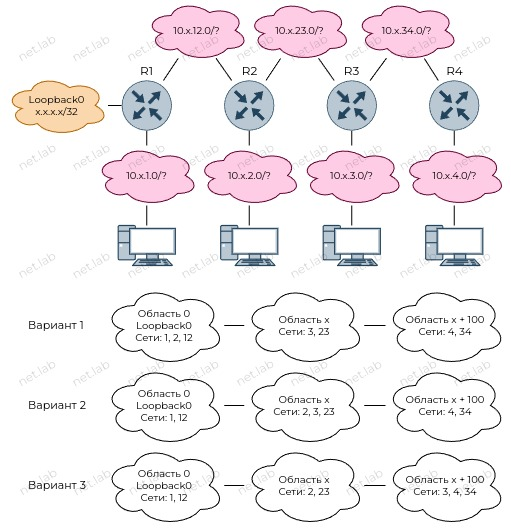
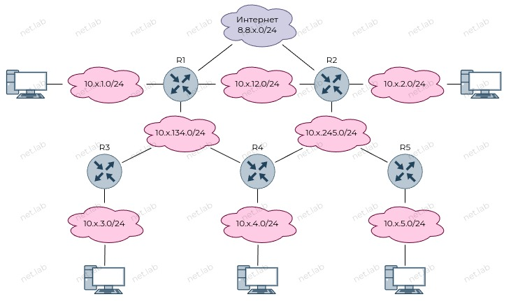

OSPF
Теоретические сведения
Router ID
- ID маршрутизатора в OSPF
- Используется при обмене сообщениями в рамках OSPF
Правила выбора:
- Назначен вручную
- Максимальный адрес среди интерфейсов loopback
- Максимальный IP-адрес среди остальных интерфесов
Области
- Область 0 - магистральная (backbone)
- К области 0 должны быть подключены другие области
- Напрямую
- С помощью виртуального канала (virtual link)
Примеры
OSPFv2 + Cisco
Включить объявление сети 192.168.1.0/24 в области 0:
conf t
router ospf 1
network 192.168.1.0 0.0.0.255 area 0
Назначить пассивный интерфейс:
conf t
router ospf 1
passive-interface е0/0
Задать стоимость интерфейса:
conf t
int e0/0
ip ospf cost 20
Включить аутентификацию с помощью простого текста в области 0:
conf t
router ospf 1
area 0 authentication
exit
int e0/0
ip ospf authentication-key netlab
Создать виртуальный канал:
conf t
router ospf 1
area 1 virtual-link 10.10.10.10
⚠️ Команды выполняются с двух сторон виртуального канала.
Обычно нужно указывать Router ID в качестве точки подключения виртуального канала.
Посмотреть настройки виртуальных каналов:
show ip ospf virtual-links
Посмотреть соседние маршрутизаторы:
show ip ospf neighbor
Задать идентификатор маршрутизатора (Router ID):
conf t
router ospf 1
router-id 1.1.1.1
Задать приоритет на маршрутизаторе:
conf t
ip ospf priority ?
Включить редистрибюцию напрямую подключенных сетей:
conf t
router ospf
redistribute connected
Перезагрузить процессы OSPF:
clear ip ospf process
Посмотреть таблицу маршрутизации:
show ip route
OSPFv3 + Cisco
Запустить процесс OSPF с номером 1:
conf t
ipv6 router ospf 1
Задать Router ID:
conf t
ipv6 router ospf 1
router-id ?
Объявление маршрута по умолчанию:
conf t
ipv6 router ospf 1
default-information originate
Включить пассивный интерфейс:
conf t
ipv6 router ospf 1
passive-interface e0/0
Сделать все интерфейсы пассивными (для того, чтобы сделать отдельный интерфейс активным, необходимо выполнить команду no passive-interface e0/0):
conf t
ipv6 router ospf 1
passive-interface default
Посмотреть настройки:
show ipv6 ospf
Объявление сети:
conf t
interface e0/0
ipv6 ospf 1 area 0
Проверить соседей OSPFv3:
show ipv6 ospf neighbor
Посмотреть таблицу маршрутизации IPv6:
show ipv6 route
Особенности настройки OSPF в Linux
⚠️ Все команды и названия актуальны для Linux Alpine, но они также могут подойти на другие дистрибутивы Linux.
-
Установить пакет
frr. Возможно, потребуется указать необходимый репозиторий, в котором находится пакет. -
Включить демона
ospfdв конфигурационном файле/etc/frr/daemons.ospfd=yes -
Необходимо указать ID процессов OSPF (в данном случае достаточно одного ID):
ospfd_instances=1,2,... -
Запустить сервис и добавить в автозапуск
/etc/init.d/frr start rc-update add frrДобавлять в автозапуск не обязательно, но при перезагрузке придется вручную стартовать демона.
-
Подключиться к консоли виртуального маршрутизатора
vtysh💡 Откроется терминал, напоминающий CLI Cisco. Команды также очень похожи (для помощи необходимо ввести
?). Через данный CLI можно настроить не только маршрутизацию, но и адреса на интерфейсах. -
Объявление сети происходит на интерфейсе
conf t int eth0 ip ospf {instance ID} area {area number} -
Редистрибуция маршрутов.
redistribute ? -
Сохранение конфигурации
wr mem -
Обязательно нужно включить маршрутизацию. В конец файла
/etc/sysctl.confдобавить строкуnet.ipv4.ip_forward=1. После этогоrebootилиsysctl -p. -
Посмотреть информацию о внешних маршрутах
sh ip ospf database external
🧠 Самостоятельная работа
⚠️ Несколько областей. Нужны виртуальные каналы.

🧰 Лабораторная работа
Ознакомиться перед выполнением
- Вместо ❔ или
xнужно подставить свой номер по журналу - Выполнять задание без "отмашки" не стоит ⛔, т.к. задание здесь может отличаться от актуальной версии
- У каждой работы есть срок сдачи 📅, который озвучивается на занятии, после которого работа не может быть защищена на максимальный балл 📉
- Дополнительные задания 📚 не являются обязательными, но по результатам сдачи лабораторной работы может быть выдано одно или несколько из них. Также дополнительное задание может быть сформулировано устно
- Для каждой лабораторной работы должен быть отчет 📝 с описанием выполнения ваших действий, оформление должно соответствовать требованиям (см. на сайте учебного заведения)
- Нужно уметь ответить на вопросы ❓ по теме, контрольные вопросы и другие связанные вопросы
- Примеры могут быть выполнены по желанию, а также выданы в качестве дополнительного задания с изменениями или без в случае неуспешной 😢 защиты основной работы
- Иногда в работах встречаются задания по IPv4 и IPv6 одновременно 🔗. Это считается как одна работа. Допускается сдача работы только с IPv4 или только с IPv6, но максимальный балл в таком случае получить невозможно
🎯 Цель работы: получить навыки настройки протокола OSPF.
Схема

Условия
- Сетевые настройки на ПК статические
- На R1 и R2 статический маршрут по умолчанию. Больше нигде не должно быть статических маршрутов
- Маршрут по умолчанию распространяется с помощью OSPF
- R3, R4, R4 - устройства на базе linux
- Любые 2 ПК - устройства на базе linux
- R1 - DR в
10.x.134.1/24 - R2 - DR в
10.x.245.1/24 - R4 - BDR в
10.x.134.1/24и10.x.245.1/24 - Настроить пассивные интерфейсы, где разумно
- Сеть "Интернет" не распространяется с помощью OSPF
- Везде использовать область 0
- На каждом маршрутизаторе должен быть интерфейс Loopback с адресом
х.х.х.х/32, гдех- номер маршрутизатора (Rх)
📚 Дополнительные задания
- Заменить указанное устройство на другое указанное
- Изменить схему как указано
- Задать на маршрутизаторах RouterID
- Изменить стоимости интерфейсов
- Настроить аутентификацию в OSFP в указанной сети
- Добавить тупиковую сеть к указанному маршрутизатору, настроить VLAN, RoaS, донастроить OSPF
-
✳️ Выполнить все то же самое только на базе IPv6. Глобальный IPv6-адрес вычислить как
2001::{IPv4-адрес}/64(.в IPv4-адресе заменить на:).Например, если на интерфейсе IPv4-адрес -
10.0.1.1/24, тогда IPv6-адрес на том же интерфейсе задать как -2001::10:0:1:1/64. -
✳️ Разделить на области без использования виртуальных каналов
- ✳️ Разделить на области с использованием виртуальных каналов
- ✳️ Выполнить и защитить самостоятельную работу с указанным вариантом
🤔 Контрольные вопросы
- Что такое DR и BDR? Как они выбираются?
- Для чего используется RouterID?
- Что такое пассивный интерфейс и зачем он нужен?
- Как сделать R4 DR во всех подключенных к нему сетях?
- Какая административная дистанция у OSPF?
- Что такое метрика и какое ее максимальное значение?
- Для чего используются адреса
224.0.0.5и224.0.0.6? - Сколько маршрутов на указанном маршрутизаторе, полученных указанным способом?
- Если на R5 задать пассивный интерфейс в сторону ПК, то как изменится доступность устройств?
- Если на R5 задать пассивный интерфейс в сторону сети 245, то как изменится доступность устройств?
- Если на R4 задать пассивный интерфейс в сторону сети 134, то как изменится доступность устройств?
- Если на R4 задать пассивный интерфейс в сторону сетей 134 и 245, то как изменится доступность устройств?
- Интерфейс в сторону "Интернета" быть пассивным или нет?
- Зачем нужна аутентификация в OSPF? Что будет, если задать неправильный пароль?
- Можно ли с помощью Wireshark "взломать" аутентификацию в OSPF?
- Что такое виртуальный канал в OSPF и для чего он используется?
- Чем примечательна область 0 в OSPF?
- Как используется интерфейс Loopback в OSPF?
- Что такое ABR и ASBR в OSPF?
- Что такое редистрибуция маршрутов? Для чего используется
redistribute connected? - Можно ли заменить команду
network ...наredistribute connected? - Какая стоимость маршрута между указанными сетями?
- Если "пинговать" неизвестный адрес, то куда уйдут пакеты?
- Останется ли доступ в "Интернет" при отключении R1 или R2?
- Отправляются ли пакеты OSPF из пассивного интерфейса?
- Что произойдет, если включить пассивный интерфейс между маршрутизаторами?
- Как определяется итоговая стоимость пути меджу сетями?
- Что произойдет, если в широковещательном домене из 3 маршрутизаторов отключить DR?
- Чему будет равен Router ID на маршрутизаторе, если удалить все интерфейсы Loopback?
- Почему при выборе Router ID в приоритете интерфейсы Loopback, а не физические?
Используя данный сайт и его ресурсы, вы соглашаетесь с политикой и соглашениями сайта.
©️ Оформление, изложение, медиаматериалы. И. Попов, 2020-2025
Сделано с помощью Material for MkDocs.